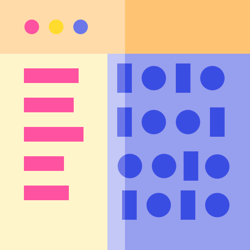

ΑΡΧΙΚΗ
ΠΡΩΤΟ ΕΤΟΣ
ΔΕΥΤΕΡΟ ΕΤΟΣ
ΤΡΙΤΟ ΕΤΟΣ
ΤΕΤΑΡΤΟ ΕΤΟΣ
ΕΞΤΡΑ
🏠 Μετακομίσαμε... Βρες μας
εδώ
.
Δεύτερο Έτος
3ο Εξάμηνο
Αντικειμενοστρεφής Ανάπτυξη Εφαρμογών [C# .Net Framework]
Λειτουργικά Συστήματα [C/Bash]
Μαθηματικός Προγραμματισμός

Μεταγλωττιστές [C/C++]
Πιθανότητες και Στατιστική
Εφαρμογές Θεωρίας Γραφημάτων
4ο Εξάμηνο
Αλγόριθμοι [C++]
Αρχές και Εφαρμογές Σημάτων και Συστημάτων [Matlab]
Βάσεις Δεδομένων [SQL]
Δίκτυα Υπολογιστών
Προγραμματισμός στο Διαδίκτυο και τον Παγκόσμιο Ιστό [Java]
Πληροφορική στην Εκπαίδευση